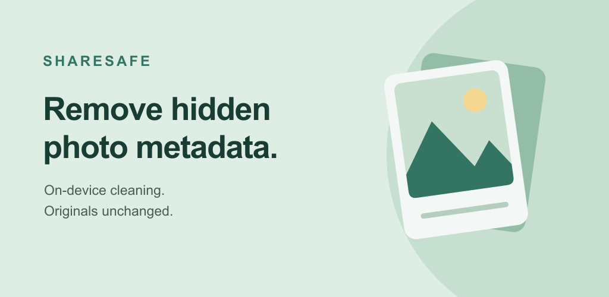
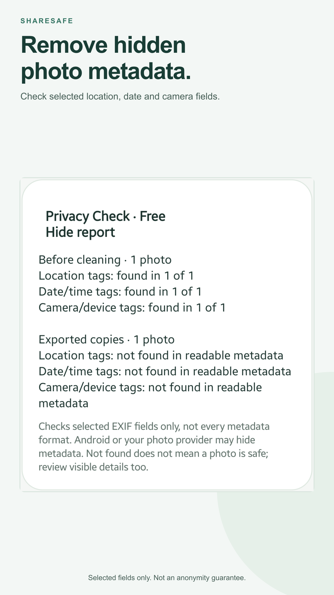
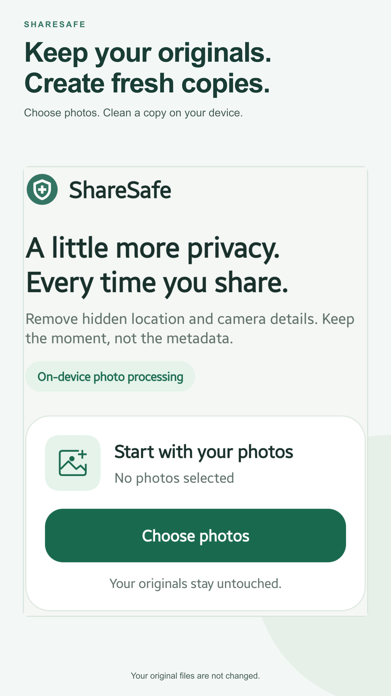
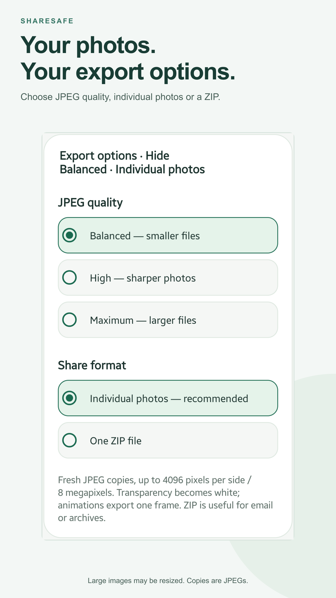
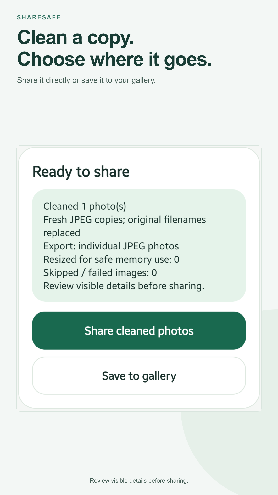

Google Play · English (United Kingdom)
ShareSafe: Metadata Remover
Local asset preview. Check Play Console for the current review and publication status.
Short description
Remove photo metadata on-device. Keep originals. Optional Pro editing.
70/80 characters
Feature graphic

Phone screenshots · proposed order








What changed
Clearer opening benefit, larger focused real UI captures without system-bar clutter or partial cards, a consistent green feature graphic, and simpler short-description copy.
Pro before/after capture is still pending. The phone needs to be reconnected; no invented editor screen is included.
Pro is a paid, one-time optional unlock. Full source captures and asset provenance are retained. Existing privacy and SDK disclosures in the full description are unchanged.